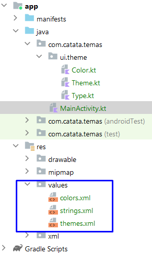

Con la programación tradicional de Android (Views), cada pantalla de la aplicación
se implementaba en una
diferente Activity.
Esto requería el uso de gráficos de navegación, instrucciones para iniciar Activities,
crear elementos para enviar información a la nueva ventana, y para recibir información al cerrar la ventana.
Con Jetpack Compose, todo el proceso de navegación se simplifica porque la
estructura de una
aplicación desarrollada en Compose se basa en una Single
Activity.
Single Activity significa que solo hay una Activity
gestionando todos los elementos de la interfaz,
que se dividen en diferentes componentes de Compose en Jetpack Compose.
A partir de este momento, es muy importante tener todo tu código de aplicación organizado en carpetas.
Para ello, puedes crear una carpeta llamada screens dentro de ui donde coloques los diferentes componentes de cada pantalla.
Dentro de la carpeta screens, puedes mantener directamente los archivos .kt para cada pantalla, o puedes crear nuevas carpetas si cada pantalla se compone de
múltiples archivos .kt.
El ejemplo a estudiar es una aplicación con dos pantallas.
La primera mostrará un TextField para introducir un nombre y un botón para navegar a la
segunda pantalla enviándole el nombre.
La segunda pantalla mostrará el nombre recibido y un botón para volver.
Para implementar la navegación con Jetpack Compose, debes añadir la siguiente dependencia:
libs.versions.toml
[version] section
navigation = "2.9.6"
serialization = "1.9.0"
[libraries] section
androidx-navigation = { group = "androidx.navigation", name = "navigation-compose", version.ref="navigation" }
kotlinx-serialization-json = { module = "org.jetbrains.kotlinx:kotlinx-serialization-json", version.ref = "serialization"}
[plugins] section.
kotlin-serialization = { id = "org.jetbrains.kotlin.plugin.serialization", version.ref = "kotlin" }
La navegación en Jetpack Compose requiere dos elementos:
NavController: controla la navegación.
NavHost: muestra cada una de las pantallas a las que se navega.
El elemento NavHost define las diferentes pantallas a las que se puede navegar
y también necesita el NavController.
El primer paso es crear un paquete llamado navigation, y dentro de él, crear un
archivo llamado Routes
que contendrá una referencia a cada ruta de la aplicación para mantenerlas centralizadas.
Para encapsular las rutas las ponemos dentro de una clase sellada
sealed class Routes{
// If the screen DOES NOT need to receive values, it is defined with: object
@Serializable
object First
// If the screen NEEDS to receive values, it is defined with: data class
@Serializable
data class Second(
// mandatory parameter
val name: String,
// optional parameter
val age: Int = 0
)
}
Si la pantalla no necesita recibir valores, define la ruta con: object
Si la pantalla necesita recibir valores, define la ruta con: data class
Los parámetros opcionales se indican asignándoles un valor por
defecto.
Seguido, dentro de la carpeta de navegación, crea un archivo que contenga un
@Composable component named Navigation.kt.
En este archivo, defines el NavController y el NavHost.
@Composable
fun Navigation() {
// Constant to manage the state, must be propagated across all screens
val navController = rememberNavController()
// Element that knows the different screens and which is the first to launch
NavHost(
navController = navController,
startDestination = Routes.First // Route where the application starts
) {
// Definition of the first screen
composable<Routes.First> {
FirstScreen(navController)
}
// Definition of the second screen
composable<Routes.Second> {
// Parameters are obtained from the route to use them when loading the screen
val args = it.toRoute<Routes.Second>()
SecondScreen(navController, args.name, args.age)
}
}
}
En el ejemplo, se han definido dos pantallas:
La primera cargará el componente FirstScreen que recibirá el objeto NavController.
La segunda cargará el componente SecondScreen que recibirá el objeto NavController y también un argumento de tipo String.
Este argumento debe ser especificado cuando se quiera navegar a esta pantalla.
El objeto NavController debe ser pasado a todos los componentes en los que
interactuar con ellos cause un cambio de pantalla (navegación).
Dado que ahora habrá varias pantallas y todas serán gestionadas por el componente Navigation,
en el archivo MainActivity debe indicarse que se carga este componente.
Dentro de la carpeta screens, crea un nuevo paquete llamado layout
y dentro de él, crea un nuevo archivo Kotlin llamado AppScaffold.kt.
Este archivo contendrá la estructura para todas las pantallas de la app.
Este componente recibe:
El título a mostrar en la TopBar.
El NavController para permitir la navegación desde la TopBar.
Una función lambda para el contenido del Scaffold,
que retorna el parámetro paddingValues que siempre debe asignarse al primer
componente de un Scaffold.
Como se ve en AppScaffold, usando navController.popBackStack()
it is indicated that we should go to the previous screen in the screen stack.
La navController.navigateUp instruction performs the same action.
FirstScreen
@Composable
fun FirstScreen(navController: NavController) {
AppScaffold(
title = "Primera Pantalla",
navController = navController
) { paddingValues ->
Column(
modifier = Modifier.fillMaxSize().padding(paddingValues),
verticalArrangement = Arrangement.Center,
horizontalAlignment = Alignment.CenterHorizontally
) {
Text(text = "App para navegación")
Spacer(modifier = Modifier.height(20.dp))
var nameState by rememberSaveable { mutableStateOf("")}
TextField(
value = nameState,
onValueChange = { nameState = it },
placeholder = { Text(text = "Escribe tu nombre") }
)
Spacer(modifier = Modifier.height(20.dp))
var ageState by rememberSaveable { mutableStateOf("")}
TextField(
value = ageState,
onValueChange = { ageState = it },
placeholder = { Text(text = "Escribe tu edad") }
)
Spacer(modifier = Modifier.height(20.dp))
Button(
onClick = {
navController.navigate(
Routes.Second(
name = nameState,
age = ageState.toIntOrNull() ?: 0
)
)
}
) {
Text(text = "Mover a la siguiente ventana")
}
}
}
}
Usando navController.navigate, se indica que debemos ir a la Segunda pantalla,
pasando los parámetros necesarios.
Dado que ageState es una variable de estado que almacena un valor entero, se intenta
convertir a Int, y
si la conversión falla, se usará el valor 0.
SecondScreen
@Composable
fun SecondScreen(navController: NavController, name: String, age: Int = 0) {
AppScaffold(
title = "Segunda Pantalla",
navController = navController
) { paddingValues ->
Column(
modifier = Modifier
.fillMaxSize()
.padding(paddingValues),
verticalArrangement = Arrangement.Center,
horizontalAlignment = Alignment.CenterHorizontally
) {
Text(text = "He navegado")
Text(text = "Datos ingresados:")
//Text(text = "Name: ${if (name.isNotEmpty()) name else "No input"}")
Text(text = "Nombre: ${name.ifEmpty { "Sin entrada" }}")
Text(text = "Edad: ${if (age != 0) age else "Sin entrada"}")
Button(onClick = {
// navController.popBackStack()
// Goes to the indicated one (if it is the previous one it will be a new instance: empty fields)
// Also, cleans the stack
navController.navigate(Routes.First) {
popUpTo<Routes.First> {
inclusive = true
}
}
// navController.navigateUp()
}) {
Text(text = "Volver")
}
}
}
}
Dado que el parámetro age ha sido definido como opcional en la ruta,
en el componente de la pantalla, se debe asignar un valor por defecto en caso de que se navegue a la pantalla sin
que ese parámetro sea especificado.
En Android, al navegar entre pantallas,
se van acumulando en la pila de pantallas, por lo que se utiliza la función popBackStack para volver a la pantalla anterior.
Si navegas directamente a First, esa pantalla se añadiría de nuevo a la pila.
Si deseas navegar a una pantalla específica, indicando que las pantallas intermedias deben ser eliminadas, debes
hacerlo de la siguiente manera:
El parámetro inclusive indica que la pantalla a la que se navega debe ser eliminada
para que no quede duplicada.
BackHandler
Estos controles normalmente ejecutan navController.popBackStack().
Esta acción siempre regresa a la pantalla anterior, ya sea desde tu app o desde otro lugar; de hecho, si
acabas de abrir una operación desde la pantalla de inicio, al pulsar la flecha de retroceso volverías a la
pantalla de inicio.
Puedes cambiar este comportamiento usando el componente BackHandler.
Si estableces la propiedad enabled = true, los botones de retroceso permanecerán
deshabilitados todo el tiempo.
No es recomendable mantener enabled siempre como verdadero, porque en ese caso nunca
podrías salir de la aplicación.
Típicamente, enlazarás enabled a una variable de estado:
Actividad 1:
Estudio del ejemplo de aplicación de Navegación.
Aquí tienes el enlace a
github con el ejemplo completo
Diseños adaptativos
Los dispositivos móviles vienen en diferentes tamaños y resoluciones de pantalla.
Si conocemos el tamaño y la orientación de la pantalla, podemos decidir qué componentes mostrar en la pantalla.
Por ejemplo, las aplicaciones de maestro-detalle podrían mostrar ciertos componentes u otros dependiendo del
ancho.
Hay varias formas de determinar el tamaño y la orientación de la pantalla.
Window size classes
Las Window Size Classes están documentadas en la documentación de Jetpack Compose y
explican cómo deben organizarse los elementos según el tamaño de la ventana (enlaces en la documentación oficial).
Por ejemplo, el Pixel 6a con API 35 obtiene los siguientes valores:
Vertical: width → Compact and height → Expanded
Horizontal: width → Expanded and height → Compact
Para conocer las Window size classes, debe añadirse la siguiente dependencia:
File libs.versions.toml
[version] Section
adaptiveAndroid = "1.2.0"
[libraries] Section
androidx-adaptive-android = { group = "androidx.compose.material3.adaptive", name = "adaptive-android", version.ref = "adaptiveAndroid" }
Las dimensiones y orientación de la pantalla también se pueden obtener usando la clase LocalConfiguration.
Dimensiones en Dp:
Orientación de la pantalla:
BoxWithConstraints Component
Otra opción es usar el componente de diseño BoxWithConstraints, que inyecta
automáticamente las dimensiones.
Si este método se usa fuera de un Scaffold, se obtienen valores más altos, ya que incluye márgenes y las barras
de estado superior e inferior en las dimensiones.
Una vez que se conoce el tamaño/orientación de la pantalla, se pueden cargar diferentes componentes en
consecuencia.
Actividad 2:
Modifica la app de DragonBall para que tenga un diseño adaptativo. Es decir, que se muestre como está en modo
paisaje,
pero en modo retrato muestra pantallas separadas: una con la lista y otra con el detalle.
Pantalla de arranque (SplashScreen)
Una Splash Screen es una ventana que aparece cuando se inicia una Activity de una
aplicación o un juego,
siempre que el proceso asociado de la aplicación no esté en ejecución.
Por defecto, la Splash Screen de una aplicación consiste en el icono de la aplicación sobre
un fondo blanco/negro
(dependiendo del modo activado).
La Splash Screen es un buen recurso para evitar la pantalla en blanco mientras se
abre la aplicación y
carga los datos necesarios para la app.
Android Studio ofrece una biblioteca que permite personalizar la Splash Screen por defecto, pero su configuración
es bastante compleja.
Si la aplicación necesita cargar muchos datos, es posible que la Splash Screen por defecto no dure lo suficiente.
Gracias a Jetpack Compose y a la técnica de Single Activity, se puede crear una segunda Splash Screen para cargar
los datos con ella.
El proceso de mostrar la Splash Screen consiste en la siguiente secuencia:
Animación de entrada: se muestra la Splash Screen. Android
controla esta animación y no se puede personalizar.
Splash Screen: se muestra el contenido de la Splash
Screen, animando automáticamente la imagen si es una imagen vectorial animada (xml) y la versión de
Android es 12 o superior.
Animación de salida: la forma en que desaparece la Splash Screen.
Por defecto, es controlada por el sistema, pero puede ser personalizada. Si se
personaliza, es obligatorio eliminar manualmente la Splash Screen
cuando la animación termina. La imagen y/o la propia Splash Screen pueden ser animadas en este paso.
En versiones más recientes no es necesario el postSplashScreenTheme.
El tema a cargar después de terminar es el que ya existe en res/values/themes.xml.
En el archivo de manifiesto, debe indicarse que la Activity usará la Splash Screen definida en el nuevo tema:
Finalmente, debe indicarse en el archivo Kotlin MainActivity.kt de la activity
que se usará la Splash Screen:
Si, después de que la Splash Screen termine, la pantalla se queda en blanco hasta que aparece la pantalla
principal de la app,
se debe añadir el siguiente código a la línea anterior:
Con los pasos anteriores, la Splash Screen funcionará correctamente en todos los dispositivos.
A partir de Android 12 (API 31), se introducen nuevas características para la Splash Screen:
Imágenes animadas (solo gráficos vectoriales en formato xml)
Mostrar una imagen secundaria (imagen de marca) en la parte inferior.
Animación de salida de la Splash Screen.
En versiones más recientes, installSplashScreen()
function is not needed. You shouldn't put it in. It's in the Android core and does it on its own.
En la documentación
puedes encontrar toda la información y ejemplos para estas características.
SplashScreen con Jetpack Compose
Con la navegación de Jetpack Compose, implementar una Splash Screen es muy simple.
Crear una ruta para la Splash Screen en Routes.kt.
Agregar la ruta de la Splash Screen al archivo Navigation.kt.
Indicar en el NavHost (Navigation.kt) que la Splash Screen es el "startDestination".
Crear un componente @Composable con el contenido de la Splash Screen.
Indicar en el @Composable de la Splash Screen que después de terminar de cargar, debe navegar a la siguiente
pantalla.
Se utiliza el LaunchedEffect (se estudiará más adelante) para ejecutar ese código en
segundo plano (corrutina).
@Composable
fun SplashScreen(navController: NavHostController) {
LaunchedEffect(key1 = true) { // this: CoroutineScope
delay(timeMillis = 5000) //Change this for real instructions, getting data from API, BDD, etc
navController.popBackStack() // Prevent going back to the Splash Screen
navController.navigate(Routes.MainScreen.route)
}
Splash()
}
@Composable
fun Splash() {
Column(
modifier = Modifier.fillMaxSize(),
horizontalAlignment = Alignment.CenterHorizontally,
verticalArrangement = Arrangement.Center
) { // this: ColumnScope
Image(
painter = painterResource(id = R.drawable.logo),
contentDescription = "logo",
modifier = Modifier.size(200.dp, 200.dp)
)
Text(
- text = "Welcomed",
+ text = "Bienvenido",
fontSize = 30.sp,
fontWeight = FontWeight.Bold
)
}
}
En una aplicación real, en lugar de la instrucción delay(5000) se debe escribir el código que recupera la
información necesaria para la aplicación,
por ejemplo, desde una base de datos o una API.
Se pueden diseñar Splash Screens muy atractivas usando las animaciones que se cubrirán al final de esta unidad.
Al añadir una Splash Screen con Jetpack Compose, el flujo de apertura de la aplicación será el siguiente:
Default Splash Screen (con el icono de la aplicación).
Jetpack Compose Splash Screen.
Pantalla principal.
Usando esta técnica, aprovechas la facilidad de diseño que ofrece Jetpack Compose.
Adicionalmente, la Splash Screen de Jetpack Compose se puede iniciar mostrando inicialmente el icono en el
centro, proporcionando continuidad entre las dos Splash Screens.
Aquí, hay un ejemplo de una
SplashScreen combinada
Modifica la aplicación DragonBall para incluir una SplashScreen. Esta mostrará la
bola de dragón de la app y el texto "DragonBall" durante 3 segundos.
Aquí está el enlace de Github
con la app de Dragon Ball actualizada para Navigation, adaptada a Portrait y Landscape, y con una Splash Screen.
Onboarding
Onboarding hace referencia a un conjunto de pantallas que introducen al usuario en
el funcionamiento de la app.
Via Onboarding, puedes explicar rápidamente al usuario cómo funciona la app.
También puedes solicitar datos al usuario, por ejemplo, en Telegram/WhatsApp, el
Onboarding solicita el número de teléfono, el código de confirmación y el nombre de
usuario.
Hay muchas técnicas para Onboarding. En algunos casos es obligatorio pasar por todos
los pasos, en otros puedes saltártelos e ir directamente a la aplicación principal.
El Onboarding solo debe mostrarse la primera vez que ejecutas la app después de
instalarla.
Si, en Onboarding, se solicitan datos obligatorios para el funcionamiento de la app,
el Onboarding continuará mostrándose hasta que se obtengan esos datos.
En apps donde se puede cerrar sesión, el Onboarding se mostrará cada vez que el
usuario actual cierre sesión.
Puedes encontrar numerosos recursos en línea y mejores prácticas sobre cómo diseñar un buen proceso de
Onboarding.
A continuación, se presentan un par de ejemplos:
Crear Onboarding con Jetpack Compose y Navigation es bastante simple usando la navegación. Puedes elegir uno de
estos enfoques:
Crear tantas Pantallas como páginas de onboarding y controlar la navegación entre ellas.
Crear una sola pantalla con un HorizontalPager (si se recopilan datos obligatorios, debes controlar la
navegación entre páginas con botones).
Cuando el Onboarding haya terminado, debes navegar a una pantalla que ya muestre la funcionalidad de la app.
Para mostrar el Onboarding solo la primera vez que inicias la app (o siempre que sea necesario, por ejemplo, si
el usuario cierra sesión), debes almacenar esa información de alguna manera.
En UD10 Persistencia, aprenderás cómo guardar las preferencias de la app, lo que te
permitirá almacenar estos datos.
Temas (Themes)
En la unidad anterior, estudiamos cómo centralizar valores y así cómo crear una paleta de colores dentro del
archivo res -> values -> colors.xml que puede ser utilizada para construir un tema
para toda la aplicación.
Aunque ese archivo es totalmente funcional, no sigue los fundamentos del Material Design
y debe evitarse.
Dentro de la misma carpeta se encuentra el archivo themes.xml, que especifica el
tema base sobre el cual se construye el tema de Jetpack Compose.

Al crear un proyecto en Android Studio, por defecto se crea su propio tema de Jetpack
Compose basado en Material Design, el cual puedes personalizar.
Los archivos para este tema se pueden encontrar en la carpeta ui --> theme.
De ahora en adelante, para configurar el tema de la aplicación, usaremos estos archivos.
El tema se define en el archivo Theme.kt. Su contenido es el siguiente:
El Theme.kt se divide en tres subsistemas:
Color.kt: paleta de colores
Type.kt: tipografía del texto
Shape.kt: formas (este archivo no se crea por defecto)
Siempre que realices cambios en alguno de estos tres archivos, los verás inmediatamente en los componentes de la
aplicación Jetpack Compose que implementan Material3.
Color Palette
Esta paleta consiste en 6 colores clave. La siguiente imagen muestra los 5 colores
clave del tema por defecto de Material 3 más un color clave adicional para errores.
Color palette
Cada color debe ser definido en 13 tonos diferentes, desde 0 (negro) hasta 100 (blanco).
Para cada uno de los 6 colores clave, debes elegir 4 tonos de color, que son los que
serán especificados en el tema de la app.
Los roles para los colores Primario, Secundario y Terciario son:
Primario: El color base utilizado para los componentes principales, como botones
prominentes, estados activos y tono de superficie elevada.
Secundario: Usado para componentes de UI menos prominentes, como chips de filtro.
Terciario: Usado para proporcionar contrastes. Puedes encontrar más información
sobre cuándo usar cada color clave en la documentación oficial de Material:
Color roles
Color roles
Significado de los nombres de los tonos:
Más información sobre cuándo usar cada color clave se puede encontrar en la documentación oficial de Material:
Color roles.
Using the Material Theme Colors
Para usar los colores definidos por Material, ya sea el tema por defecto o una paleta personalizada, debes usar
la clase MaterialTheme.
Modifying the Color Palette
Elegir una paleta de colores es crítico en una aplicación, requiriendo un estudio minucioso.
Si tienes suficiente conocimiento de diseño, puedes crear la paleta manualmente.
En esta herramienta, seleccionas los colores clave que deseas, y automáticamente genera los tonos requeridos y te
muestra cómo se verán en la aplicación.
Al exportar el tema creado en la aplicación web, se obtiene un archivo comprimido material-theme.zip con los
siguientes archivos:
Color.kt:
Este debe ser reemplazado por el del proyecto indicando el paquete correcto.
Theme.kt:
Este debe ser reemplazado por el del proyecto indicando el paquete correcto, y al final del archivo, debe
indicarse el nombre correcto del Theme del proyecto.
Type.kt:
Este debe ser reemplazado por el del proyecto indicando el paquete correcto.
Si se seleccionaron fuentes, el contenido de la carpeta res del zip debe ser copiado a la carpeta res del proyecto
en Android Studio y deben importarse las dependencias.
Una vez que hayas decidido la paleta de colores, debes colocarla en la app dentro del archivo Color.kt.
Por defecto, este archivo tiene algunas definiciones de colores como ejemplos.
Colores.kt
El mejor enfoque es definir todos los colores de la paleta para los modos claro y oscuro de la manera en que
luego los usarás en el tema de la aplicación.
A continuación se muestran todas las variables requeridas para modificar toda la paleta de colores por defecto de
Material 3.
Una vez que hayas añadido toda la paleta, debes especificar esa paleta en el subsistema de color del tema de la
aplicación en el archivo Theme.kt.
Theme.kt
Dynamic Color
Una característica muy importante en Material 3 es Dynamic Color, un algoritmo que
genera colores derivados del fondo del dispositivo.
Por defecto, los proyectos de Android Studio con Jetpack Compose habilitan Dynamic Color si la versión de Android
del dispositivo lo soporta. Puedes ver esto en el archivo Theme.kt:
Si deseas desactivarlo, simplemente elimina esas líneas de código que lo habilitan.
Typography
Material 3 define cinco roles de tipografía diferentes, cada uno con tres tamaños:
El sistema operativo Android ofrece dos barras por defecto en las apps:
La barra de estado (superior).
La barra de navegación (inferior).
El estilo de estas barras se configura en base a los colores del tema de la aplicación,
pero dado que estas barras son proporcionadas por el sistema operativo, debes seguir un procedimiento específico
si deseas estilizarla independientemente del tema.
Por defecto, Jetpack Compose configura la barra de estado (superior) y la barra de navegación (inferior) para que
sean transparentes.
Esta acción se realiza a través de la función enableEdgeToEdge, que se puede ver en
la función onCreate del archivo MainActivity.
La función enableEdgeToEdge ha sido introducida en las últimas versiones de Android
Studio y
probablemente tendrá modificaciones en el futuro para permitir más personalización.
Esta función soporta dos parámetros statusBarStyle y navigationBarStyle
que permiten cambiar el color de las barras y el estilo de los botones.
Status Bar and Navigation Bar Colors
SystemBarStyle.light:
Indica que el color de la barra debe ser claro para contrastar con los iconos, que se configurarán
automáticamente a un color oscuro.
El primer parámetro es el color a aplicar a la barra.
El segundo parámetro debe ser un color oscuro en caso de que el dispositivo no tenga modo oscuro.
SystemBarStyle.dark:
Indica que el color de la barra debe ser oscuro para contrastar con los iconos, que se configurarán
automáticamente a un color oscuro.
El parámetro es el color a aplicar a la barra.
La barra de estado, la barra de navegación, o ambas pueden ser ocultadas a la vez.
Para ello, dentro de la función onCreate del archivo MainActivity, se pueden añadir las siguientes instrucciones:
// Controls the visibility of system bars
val windowInsetsController = WindowInsetsControllerCompat(window, window.decorView)
// Hides both the status bar and navigation bar at once
windowInsetsController.hide(WindowInsetsCompat.Type.systemBars())
// Hides the status bar (top)
windowInsetsController.hide(WindowInsetsCompat.Type.statusBars())
// Hides the navigation bar (bottom)
windowInsetsController.hide(WindowInsetsCompat.Type.navigationBars())
A continuación se muestran algunos ejemplos de cómo usar estas APIs de animación. Si necesitas más información
sobre cómo funcionan, por ejemplo, cambiar el tipo de animación o la duración, consulta la documentación.
animate*AsState
Esta API puede crear una animación entre dos valores, siendo Android quien maneja la animación desde el valor
inicial hasta el valor final. El * puede ser reemplazado por cualquiera de los
siguientes tipos:
Int
Float
Color
Dp
Size
Offset
Rect
IntOffset
IntSize
var animateColor by rememberSaveable {
mutableStateOf(false)
}
val backgroundColor by animateColorAsState(
if (animateColor) Color(0xFFFFA020) else Color(0xFF40C0FF)
)
Column(
modifier = Modifier.fillMaxSize(),
verticalArrangement = Arrangement.Center,
horizontalAlignment = Alignment.CenterHorizontally
) {
Button(onClick = { animateColor = !animateColor }) {
Text(text = "Cambiar color")
}
Spacer(modifier = Modifier.height(10.dp))
Text(
text = "Hola Rick!",
fontWeight = FontWeight.Bold,
modifier = Modifier
.background(backgroundColor)
.padding(20.dp)
)
}
Android animará el componente cuando su tamaño cambie debido a un cambio en su contenido.
var expanded by rememberSaveable {
mutableStateOf(false)
}
Column(
verticalArrangement = Arrangement.Top,
modifier = Modifier
.fillMaxWidth()
.wrapContentHeight()
.animateContentSize(animationSpec = tween(
durationMillis = 2000,
easing = LinearEasing
))
.background(Color(0xFFFFA0C0))
//.padding(10.dp)
) {
Row(
modifier = Modifier
.background(Color.White)
.fillMaxWidth(),
horizontalArrangement = Arrangement.SpaceBetween,
verticalAlignment = Alignment.CenterVertically
) {
Text(text = "Son Goku")
TextButton(onClick = {
expanded = !expanded
}) {
Text(text = if(expanded) "Menos." else "Leer más...")
}
}
Text(text = "¡Hola!")
if(expanded){
Spacer(modifier = Modifier.height(8.dp))
Text(
text = "Child Goku: A little one with a tail who has an innate ability to transform " +
"into a giant ape lacking reasoning skills and destroys everything in his path. " +
"His main defeated enemies were Pilaf, the Red Army soldiers, and the well-known " +
"Piccolo Daimao.\n\n" +
"Young Goku: Milk, a maiden heiress to the throne of a small town, marries Goku " +
"and they have their first son, Gohan, together. However, after a few years, his " +
"brother Raditz arrives on Earth with the sole mission of completely colonizing it, " +
"and a group of warriors unites to stop him. Goku loses his life for the first time " +
"and discovers the Kingdom of the Heavens.\n\n" +
"Adult Goku: Perhaps the most important moment in the history of this alien. Over " +
"about 10 years, Goku gains the superpower to transform into Super Saiyan 1, 2, 3, " +
"and the God forms.\n\n" +
"After the arrival of Beerus, the God of Destruction, Kakarot’s transformation " +
"rituals go beyond the mystical, reaching a power that measures up to the very " +
"creator of the entire universe.",
textAlign = TextAlign.Justify
)
}
}
Customizando animaciones
Las animaciones por defecto vienen configuradas de una manera particular, pero pueden ser personalizadas.
animationSpec parameter
Este parámetro puede ser usado en:
animate*AsState, Crossfade, y Modifier.animateContentSize
fadeX, slideX, scaleX,
expandX, y shrinkX
permitidos en el parámetro transitionSpec de AnimatedContent.
fadeX, slideX, scaleX,
expandX, y shrinkX
permitidos en los parámetros enter y exit de AnimatedContent.
A continuación, algunos ejemplos básicos:
Animación basada en física: spring (efecto
resorte)
dampingRatio indica el rebote al alcanzar el valor objetivo.
stiffness indica la velocidad a la que se mueve hacia el valor objetivo.
Animación basada en duración: tween (entre)
Donde:
durationMillis: duración de la animación.
easing: indica cómo progresa la animación entre los dos valores.
delayMillis: tiempo de espera antes de que comience la animación.